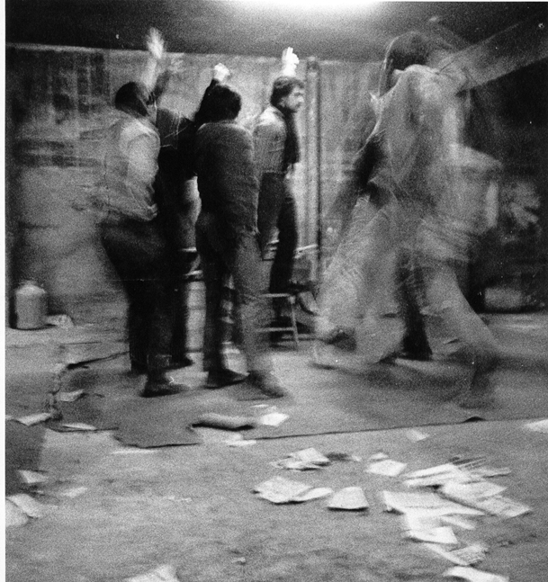
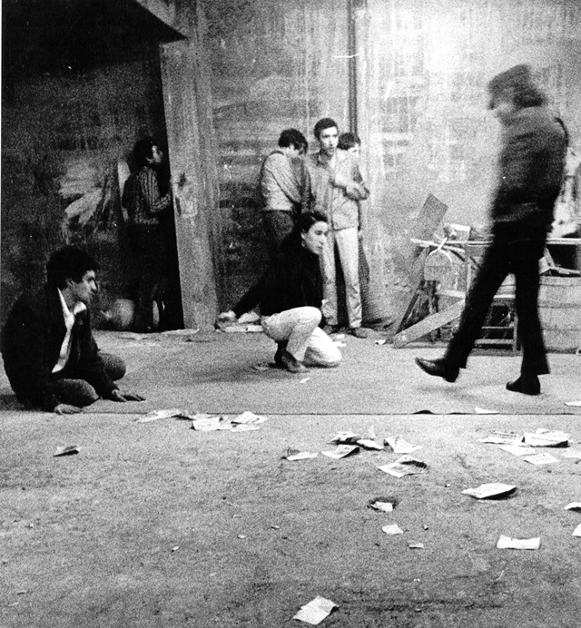
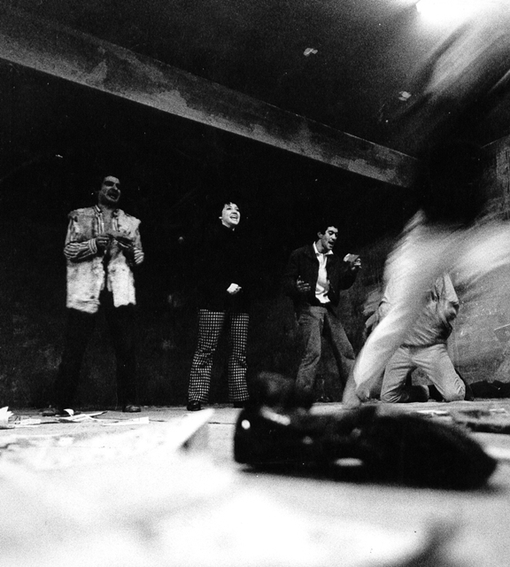
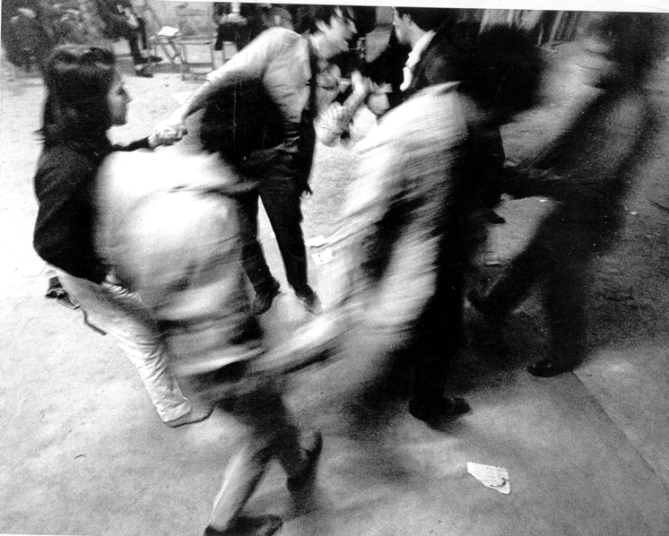
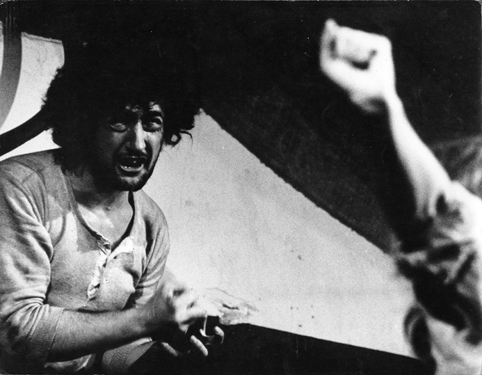
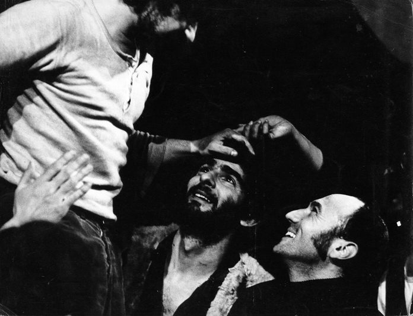
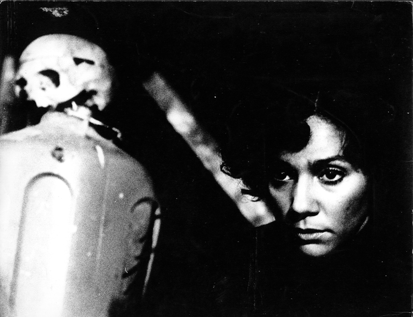

|
|
|
|
"El juego de los dominantes" Montaje dirigido por Juan Uviedo, realizado en el Colegio Mayor San Juan Evangelista, Madrid, en 1969. Fue el primero del grupo Tábano, liderado en ese entonces por Juan Margallo, uno de sus fundadores. Estracto del escrito "Tras la pista de Uviedo: experimentos socioteatrales de un paria" (Ana Longoni, publicado en 2015 en el marco de la muestra "Con la provocación de Juan Carlos Uviedo" en México): "De vuelta en Madrid –con
el grupo Tábano (activo en la resistencia cultural al
tardofranquismo)– dirigió El juego de los dominantes (1969), una
indagación de creación colectiva sobre Antonin Artaud (que años más tarde
reeditaría junto al TiT Buenos Aires). Según el relato de Juan Margallo, uno
de los integrantes de Tábano, la puesta consistía en un juego por
completo arbitrario: el grueso de los actores sabía que algunas acciones
estaban prohibidas, pero desconocía cuáles eran. Uno de los actores tenía el
rol de vigilante, armado con silbato y porra, y castigaba duramente a quienes
cometían –sin saberlo– actos prohibidos. Luego, tenía lugar una escena en
que dos policías torturaban brutalmente a un prisionero interrogándolo. Los
tres (los torturadores y el torturado) se alternaban para decir un mismo texto,
la biografía de un conocido escritor franquista: “José María Pemán y
Permartín nace en Cádiz/ el 8 de mayo del año de 1898. / Poeta y prosista,
vive en la Tacita de Plata, su ciudad natal. / Entre sus obras más importantes
están Paca Almuzara y Por el camino de la vida. / En la página 14 del ABC sale
una crítica hoy que dice…”, etcétera. Las “preguntas” y las
“respuestas” del violento interrogatorio se concatenaban armando ese texto
fuera de contexto. En otro momento de la puesta, los actores se mezclaban entre
el público interpelándolo con una única pregunta “¿Coca-cola?”.
Mientras tanto, sobre el escenario oscilaba un enorme péndulo de madera,
realizado por el pintor Manuel Viola, sobre el que se distinguían innumerables
gorros de policía. En medio de la función, un apagón general era aprovechado
por el público para clamar a los gritos “¡libertad, libertad!”. Todo
esto ocurría en un contexto en el que había que pasar estrictos controles de
la censura para poder estrenar cualquier obra, y era bien sabido que en cada
función se mezclaban policías y censores entre el público. La gente de Tábano
tomó la difícil decisión de no presentar la obra al control de la censura, y
fueron sancionados con una abultada multa de 25.000 pesetas y la prohibición de
continuar representándola (Margallo, 2014). Ante ello, al culminar la tercera y
última función, Uviedo redobló la apuesta encerrando con llave al público
dentro de la sala, mientras sonaba una canción latinoamericana de protesta."
Fotos del montaje       
|